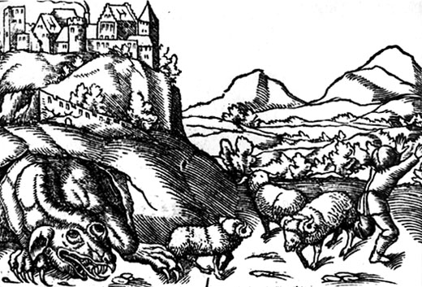

CRACOW

Come and explore
According to official statistics, in 2019 Kraków was visited by over 14 million tourists including 3.3 million foreign travellers. The visitors spent over 7.5 billion zlotys (ca. €1.7 billion) in the city (without travel costs and pre-booked accommodation). Most foreign tourists came from Germany (14.2%), United Kingdom (13.9%), Italy (11.5%), France (11.2%), Spain (10.4%) and Ukraine (5.4%).[213] The Kraków tour-guide from the Lesser Poland Visitors Bureau indicated that not all statistics are recorded due to the considerable number of those who come, staying in readily available private rooms paid for by cash, especially from Eastern Europe.[214] The main reasons for visiting the city are: its historical monuments, recreation as well as relatives and friends (placing third in the ranking), religion and business. There are 120 quality hotels in Kraków (usually about half full) offering 15,485 overnight accommodations.[215] The average stay last for about 4 to 7 nights. The survey conducted among the travelers showed that they enjoyed the city's friendliness most, with 90% of Polish tourists and 87% foreigners stating that they would recommend visiting it.[214] Notable points of interest outside the city include the Wieliczka salt mine, the Tatra Mountains 100 km (62 mi) to the south, the historic city of Częstochowa (north-west), the well-preserved former Nazi concentration camp at Auschwitz, and Ojcowski National Park,[216] which includes the Renaissance Castle at Pieskowa Skała.[217] Kraków has been awarded a number of top international rankings such as the 1st place in the Top city-break destinations 2014 survey conducted by the British consumer association. [source: Wikipedia]
SOME HISTORY
Once upon a time...
The earliest known settlement on the present site of Kraków was established on Wawel Hill, and dates back to the 4th century. Legend attributes the town's establishment to the mythical ruler Krakus, who built it above a cave occupied by a ravenous dragon, Smok Wawelski. [source: https://klaudiaandjonas.wordpress.com/magical-krakow/]